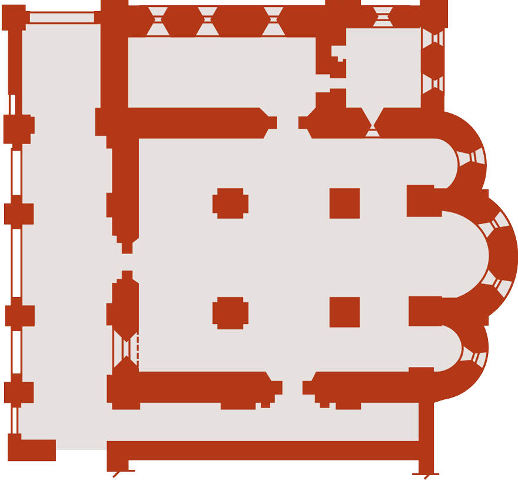

|
 |
| фотографии | план храма |
Ярославский Спасский монастырь был одной из крупнейших обителей своего времени, тесно связанной с историей России. В истории города были свои героические страницы — например, 24‑дневная осада польско-литовским войском в 1609 году, а в 1612‑м несколько месяцев Ярославль был официальной столицей России, здесь собиралось ополчение Кузьмы Минина и князя Дмитрия Пожарского. В Спасском монастыре прожил некоторое время застигнутый весенней распутицей 1613 года на пути из Костромы в Москву Михаил Фёдорович Романов, и тут же в соборе впервые он как царь стоял на пасхальной заутрене. В устье реки Которосль напротив монастыря скончался в лодке-струге возвращавшийся из опалы патриарх Никон, тело которого было помещено в Спасо-Преображенском соборе, здесь же перед отправкой его в Ново-Иерусалимский монастырь была по нему отслужена панихида. Сам собор был освящён при царе Василии Ивановиче, а расписан уже при его сыне Иване Грозном. Монастырь и собор пользовались особым покровительством московских государей — одних только жалованных грамот Ивана Грозного монастырю в музее хранится более пятидесяти.
Спасо-Преображенский собор в своём воссозданном облике XVI века поражает столичной архитектурой, классическими итальянскими пропорциями. После присоединения Ярославского княжества к Москве в 1463 году выяснилось, что в городе давно не предпринималось каменное строительство и мастеров не осталось. Обратились к московскому государю за помощью, и он прислал артель, которая строила Московский Кремль под руководством итальянца. Пропорции итальянской архитектуры сейчас трудно читаются снаружи, так как по канонам ярославской архитектуры основной объём собора опоясан крытыми галереями с востока и севера (именно здесь, на северной галерее, по легенде, и нашёл граф Мусин-Пушкин рукопись «Слова…»). Однако некоторые особенности перекрытия и декор позволяют связать этот памятник с соборами Московского Кремля (второй после Успенского собора Московского Кремля в русской архитектуре пример палатного перекрытия, круглые окна — как в Архангельском соборе, и закомары в основании центрального барабана, как в Благовещенском). Недавно отреставрированный интерьер собора оставляет впечатление цельного, вертикально устремлённого пространства, где даже сильнее, чем во внешнем убранстве, ощущается влияние итальянской архитектуры, её пропорций.
Фрески собора — тоже самые древние в Ярославле. Кроме того, это единственные сохранившиеся росписи времён Ивана Грозного с упоминанием создавших их мастеров: «Ларион Леонтьев сын, да Третьяк, да Фёдор Никитины дети, ярославцы Афонасей и Дементей Сидоровы дети». Такой редкостью не может похвастаться ни один другой российский город. К сожалению, росписи собора претерпели немало утрат в ходе перестроек и реставраций. Во время перестройки собора в XIX веке была безвозвратно утрачена центральная часть композиции западной стены — «Страшный суд». Оставшиеся фрагменты отличает интересные детали и своеобразный «динамизм». Нижний ярус росписей занимают так называемые полотенца — декоративные мотивы, характерные для убранства ярославских церквей. Они прекрасно сохранились и свидетельствуют о том, что мастера, расписывавшие Спасский собор, обладали смелостью и фантазией — ни один из рисунков этих декоративных деталей не повторяется. Ещё одно необычное и смелое композиционное решение мы найдём в восточной части — на пересекающихся под прямым углом своде и люнете, где расположен главный сюжет храма — «Преображение». Фреска поделена на две части: в горнем мире пребывают Христос и праотцы, а ниже — земной мир с тремя апостолами, ослеплёнными сиянием белых одежд Спасителя. Характерно, здесь мастера, изображая одежды, использовали чистый левкас. Этот же приём использован и в некоторых других местах, например, в одеждах Саваофа. Росписи Спасо-Преображенского собора, которые только несколько лет назад были целиком раскрыты из‑под более поздних записей, отличает лёгкость пропорций и «бестелесность» вытянутых фигур. Рассматривая росписи Спасского собора с его очень логичной системой расположения сюжетов истории Христа и Богоматери, обратите внимание на сюжеты более редкие, например, «Третий и четвёртый Вселенские соборы» на южной стене. В алтарной части в конхах на вогнутых поверхностях изображены (справа налево) Бог-Саваоф, Богоматерь и Иоанн Креститель. Учитывая, что фреска создавалась при Иване Грозном, появление его небесного покровителя в программе росписи собора вполне понятно.